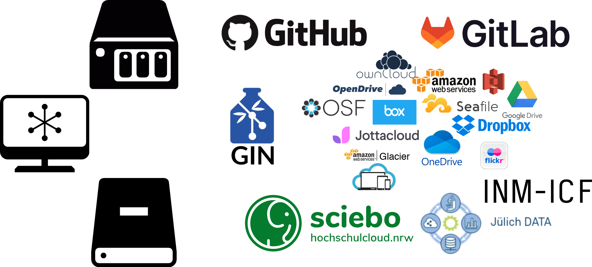
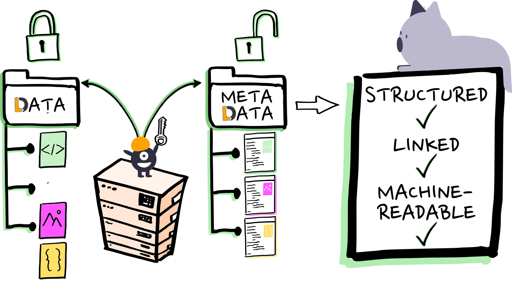
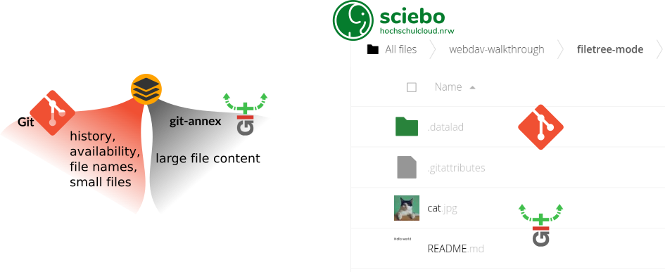
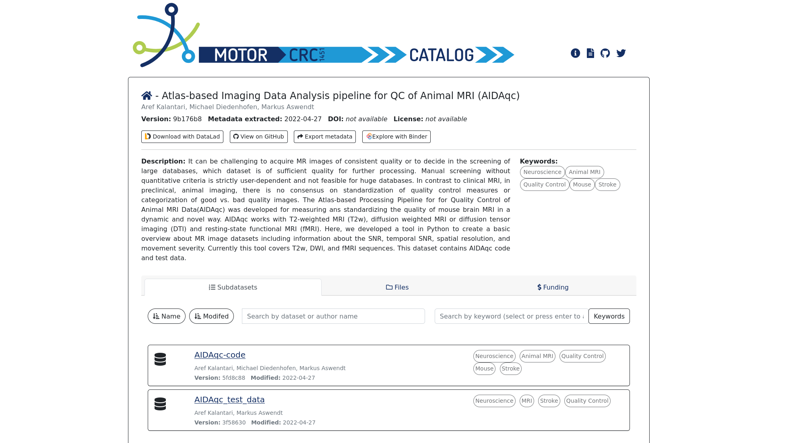
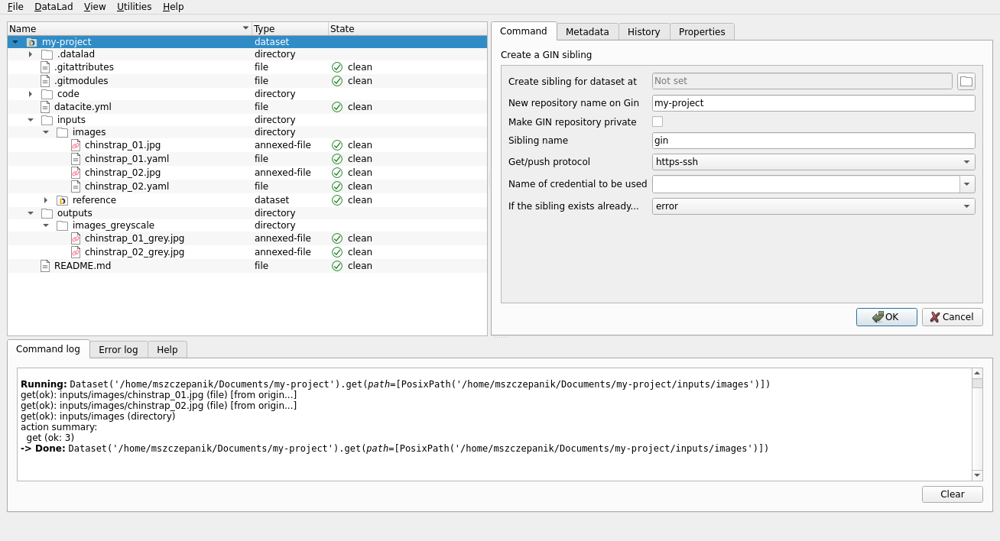

INM-7 seminar, 17 Nov 2022

– Yaroslav Halchenko, Towards the Big Data Neuroscience Nirvana
Despite increasing efforts to encourage data sharing, both the quality of shared data and the frequency of data reuse remain stubbornly low. We argue here that a significant reason for this unfortunate state of affairs is that the organization of research results in the Findable, Accessible, Interoperable, and Reusable (FAIR) form required for reuse is too often deferred to the end of a research project, when preparing for publication—by which time essential details are no longer accessible.
Dempsey et al. (2022), Sharing Begins at Home: How Continuous and Ubiquitous FAIRness Can Enhance Research Productivity and Data Reuse, Harvard Data Science Review
datalad clone git@gitlab... git annex whereis this/file.dat -- usb drive #02 -- sciebo -- gin
❱ git log --pretty=reference 2e98e2c ([DATALAD RUNCMD] Convert to greyscale, 2022-05-23) 545bc9a (Add an image processing script, 2022-05-23) d9898ad (Add sidecar metadata to photos, 2022-05-23)
"Your dataset is 1 commit ahead, 2 commits behind"
No ambiguity
[DATALAD RUNCMD] Convert to greyscale
=== Do not change lines below ===
{
"chain": [],
"cmd": "python code/greyscale.py {inputs} {outputs}",
"dsid": "9f344d79-07e7-4fb1-8215-04de5cc01d79",
"exit": 0,
"extra_inputs": [],
"inputs": [
"inputs/images/chinstrap_02.jpg"
],
"outputs": [
"outputs/images_greyscale/chinstrap_01_grey.jpg"
],
"pwd": "."
}
^^^ Do not change lines above ^^^
Self-writing lab notebook / actionable provenance records

Share datasets without content (metadata) to balance privacy and visibility (drawing: Stephan Heunis)

Convenience methods for WebDAV access & filetree publication
push, decryption on get
See example: datalad.github.io/datalad-catalog
